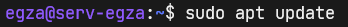

ADMINISTRACJA SYSTEMAMI OPERACYJNYMI / Serwer Web www /part 4 - DNS
Serwer Web www /part 4 - DNS
Zainstaluj bind9: Czestym rozwiązaniem błędów przy instalacji pakietów jest aktualizacja listy repozytorjów:  Skopiuj plik 000-default.conf zmieniając nazwę na koala.pl.conf. Przechodzimy do modyfikacji kopi koala.pl.conf. W tym pliku napotkasz linie przedstawione w górnej części poniższego obrazka. Zmodyfikuj je tak jak niżej. ( Kolory cie nakierują. ) Włącz w apache2 stronę "koala.pl.conf" Skopiuj plik "db.empty" zmieniając mu nazwę na "koala.pl". Zmodyfikuj ledwo co utwożona kopię "koala.pl". Na czerwono zaznaczyłem miejsca modyfikacji pliku.
Na czerwono zaznaczyłem miejsca modyfikacji pliku. Na zielono jest liczba którą należy zmieniać przy każdej zmianie w pliku aby bind9 uwzględnił nową konfigurację. Zmodyfikuj named.conf.local dopisując nową strefę "koala.pl". Zrestartuj usługi.
Aby DNS "koala.pl" i Alias "www.koala.pl" zadziałał musisz ustalić statyczne adresy dla karty sieciowej.